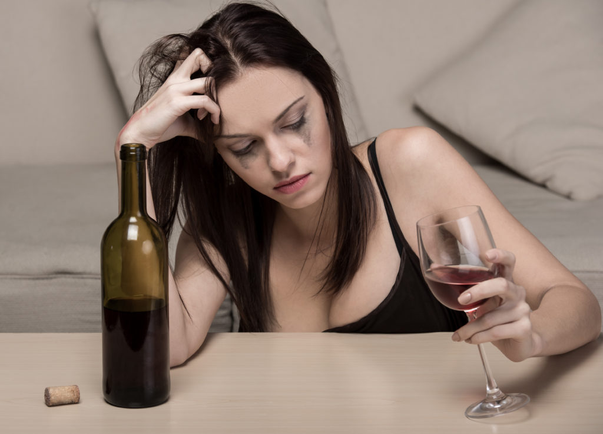

+38(068) 79 72 782
+38(068) 79 72 782Как вылечить женский алкоголизм
Umbrella Plus Безопасная Наркология
Работаем в Одессе, Киеве, Львове, Харькове, Днепре, Запорожье, Черноморске


Бесплатная консультация, работаем круглосуточно 24/7
Umbrella Plus Безопасная Наркология
Работаем в Одессе, Киеве, Львове, Харькове, Днепре, Запорожье, Черноморске
Лечение женского алкоголизма – это сложный и длительный процесс, требующий комплексного подхода и участия квалифицированных специалистов. В Одессе медицинская служба UmbrellaPlus предлагает эффективное и анонимное лечение женской алкогольной зависимости. Чтобы получить консультацию нарколога и начать лечение, позвоните нам по номеру 050-021-69-57. Наш специалист проведет первичную консультацию, определит стадию зависимости и разработает индивидуальный план лечения, учитывающий все особенности пациентки.
Женский алкоголизм – это серьезное заболевание, характеризующееся хроническим и прогрессирующим течением, которое развивается у женщин в результате систематического употребления спиртных напитков. Эта зависимость отличается от мужской более быстрым формированием и тяжелыми последствиями, как физическими, так и психологическими. Она проявляется в неконтролируемой тяге к спиртному, частом употреблении алкоголя в больших дозах, потере социального контроля, высокой толерантности к алкоголю и возникновении абстинентного синдрома (похмелья) при прекращении употребления. Если вы заметили признаки алкогольной зависимости у себя или у близкой вам женщины в Одессе, не откладывайте обращение за профессиональной помощью. Медицинская служба UmbrellaPlus предлагает квалифицированное и анонимное лечение женского алкоголизма. Позвоните нам по номеру 050-021-69-57 для получения консультации и помощи.
Развитие женского алкоголизма происходит постепенно, и его симптомы могут отличаться на разных стадиях. Важно обратить внимание на следующие признаки:
Алкогольная зависимость у женщин развивается под влиянием целого комплекса факторов:
Важно помнить, что женский алкоголизм прогрессирует значительно быстрее, чем мужской, и приводит к более тяжелым и необратимым последствиям для физического и психического здоровья. К сожалению, женщины часто испытывают больший стыд и вину, связанные с алкогольной зависимостью, и реже обращаются за своевременной помощью.
Цены на лечение женского алкоголизма начинается от 1999 грн.
| Популярные Услуги | Цена |
|---|---|
| Вывод из запоя | От 1999 грн |
| Вывод из запоя на дому | От 2199 грн |
| Капельница от алкоголя | От 1999 грн |
| Капельница от алкоголя на дому | От 2199 грн |
Лечение женского алкоголизма в UmbrellaPlus всегда носит комплексный характер и включает в себя медикаментозную и психологическую помощь на всех трех ключевых этапах лечения алкогольной зависимости. Только пройдя все этапы программы, можно добиться длительной и устойчивой ремиссии, создав условия для постоянной трезвости женщины, страдающей от алкогольной зависимости.
В медицинском центре UmbrellaPlus в Одессе используются современные и эффективные методы кодирования от женского алкоголизма:
Выбор метода кодирования осуществляется врачом совместно с пациенткой после тщательной диагностики и учета всех индивидуальных особенностей и противопоказаний.
Если вы заметили тревожные признаки злоупотребления алкоголем у вашей матери, жены, сестры или другой близкой женщины, не оставайтесь безучастными. Попытайтесь мягко поговорить с ней, выразить свою заботу и убедить обратиться за профессиональной помощью. Не вините и не стыдите ее, помните, что алкоголизм – это болезнь. Если ваши убеждения не приносят результата, обратитесь за советом к специалистам UmbrellaPlus по телефону 050-021-69-57. Наши врачи помогут вам разработать правильную стратегию поведения и убедить близкого человека начать лечение.
У женщин, страдающих от алкогольной зависимости, со временем появляются характерные и зачастую необратимые внешние изменения, которые являются отражением внутреннего разрушения организма:
Эти внешние признаки являются лишь малой частью тех разрушительных последствий, которые алкоголизм оказывает на организм женщины.
Медицинская служба UmbrellaPlus «Безопасная Наркология» заслуженно считается одним из ведущих центров лечения женского алкоголизма в Одессе. В нашей клинике работают высококвалифицированные врачи-наркологи с многолетним опытом, которые проведут тщательную диагностику стадии и формы зависимости, разработают индивидуальный план лечения, направленный не только на устранение мучительных симптомов, но и на глубокую работу с первопричинами заболевания. В процессе терапии формируется стойкое отвращение к любым алкогольным напиткам на физическом и психологическом уровне.
Для записи на консультацию и начала лечения в клинике UmbrellaPlus «Безопасная Наркология» позвоните по номеру 050-021-69-57 прямо сейчас. Мы гарантируем вам анонимность, профессионализм и индивидуальный подход.
Хронический женский алкоголизм представляет собой одну из самых сложных форм зависимости, однако даже в таких случаях при правильном и комплексном подходе достижение длительной ремиссии вполне реально. Как правило, о хроническом алкоголизме говорят, когда женщина регулярно употребляет спиртные напитки в течение шести месяцев и более, используя алкоголь как средство для борьбы с тревогой, апатией, плохим настроением или бессонницей.
Эффективное лечение хронического женского алкоголизма в UmbrellaPlus предполагает:
Такой комплексный подход позволяет вернуть женщине нормальную, здоровую и полноценную жизнь, восстановить ее физическое и психическое здоровье.
Среди народных средств существуют различные рецепты, которые могут использоваться в качестве дополнения к основному медицинскому лечению, но ни в коем случае не должны его заменять. К таким средствам относятся:
Важно помнить: Самолечение алкоголизма может быть опасным и привести к непредсказуемым последствиям. Перед использованием любых народных средств обязательно проконсультируйтесь с лечащим врачом. В Одессе вы всегда можете получить квалифицированную медицинскую помощь, обратившись в UmbrellaPlus по номеру 050-021-69-57. Мы поможем вам или вашим близким справиться с проблемой алкогольной зависимости и вернуться к здоровой жизни.
Анонимно

"Никакими усилиями самостоятельно я не смогла преодолеть запой, и наступала ломка, сопровождаемая повышенным давлением и пульсом. Тогда я решила обратиться за помощью в клинику. Врачи оказали мне неоценимую поддержку! Уже прошел месяц, и я не только не употребляю алкоголь, но даже не испытываю к нему желания!"
Анонимно
"Могу с уверенностью порекомендовать данный центр для тех, кто ищет помощь при выводе из запоя. Я неоднократно обращался к ним и могу сказать, что цена соответствует качеству услуг. После проведения капельницы в клинике, вся тяга к алкоголю проходит, и я чувствую себя гораздо лучше. Это действительно эффективный метод, и я благодарен клинике за их профессионализм и заботу!"
Анонимно
"Я очень благодарен за то, что вы помогли мне разобраться с моей проблемой алкоголизма и найти ее решение. Давно осознавал, что без помощи профессионалов я не справлюсь, и я не ошибся, выбрав ваш центр Амбрелла. Здесь действительно предоставляется профессиональная помощь, которая оказалась для меня реальным спасением. Огромное спасибо за вашу поддержку и заботу!"
Анонимно
"Неоднократно я пытался бросить алкоголь самостоятельно, но каждый раз уговаривал себя продолжать. Я сначала ограничивался одной бутылкой в день, потом двумя, и в итоге вновь попадал в запой. Но в итоге, я смог прекратить употребление алкоголя только после того, как обратился в центр Амбрелла и заказал у них услугу вывода из запоя. Уже не пью 3 месяца и удалось полностью восстановиться. Благодарю врача который меня вел - Алексея Валерьевича"
Анонимно
"Здравствуйте! Я хотел бы выразить свою искреннюю благодарность клинике за быстрое и профессиональное освобождение моего мужа пивного рабства! Ранее у меня уже не было никаких надежд на его выздоровление. Однако, благодаря вашим перспективным методам лечения, мы теперь идем к полному отказу от алкоголя. Вы дали нам новую надежду и оказали неоценимую помощь! Спасибо вам за все!"
Анонимно
"Я долгое время страдал от запоев и не мог справиться с этой проблемой. Однако, когда я обратился в этот центр, они быстро помогли мне вернуться на ноги, и самое главное - предоставили мне возможность не возвращаться к запоям. Уже почти полгода я не испытываю запоев! Это для меня настоящее чудо, я никогда не думал, что смогу так преодолеть свои проблемы. Большое спасибо центру Амбрелла!"
Анонимно
"Благодарю ваш центр Амбрелла за оперативное и высококачественное лечение! Женский алкоголизм - это настоящее горе, с которым невозможно справиться в одиночку. Я уже потеряла надежду, но благодаря вашей помощи, она вернулась ко мне! Отдельная благодарность врачу Станиславу Вячеславовичу, а также благодарность Богу за то, что он послал мне такое чудо как ваша центр! Спасибо вам всем!"
Анонимно
"Хочу выразить благодарность врачу Владиславу Алексеевичу за то, что вы избавили меня от этого ужаса. Я уже был в отчаянии, перепробовал множество клиник и центров, но только здесь я наконец получил настоящую помощь! Алкоголь полностью разрушил меня, и если бы не ваша помощь, я, возможно, уже не был бы жив. С вами я смог вернуть себе жизнь и буду благодарен вам всегда!"
Номер телефона:
+380 (97) 369 76 65
+380 (50) 021 69 57
Адрес главного офиса: г. Харьков ул. Сумская 47
Офис вашего города нужно
уточнить
Работаем в: Одессе, Киеве, Львове, Харькове, Днепре,
Запорожье
Telegram: t.me/umbrellaplus
График работы: Круглосуточно